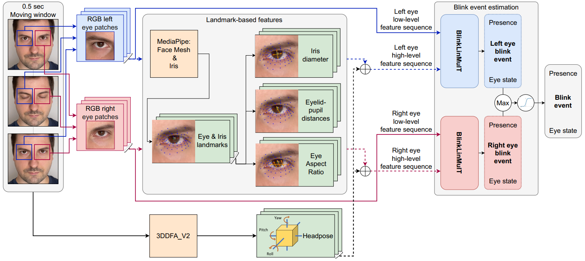
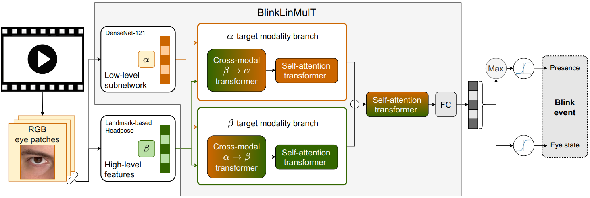
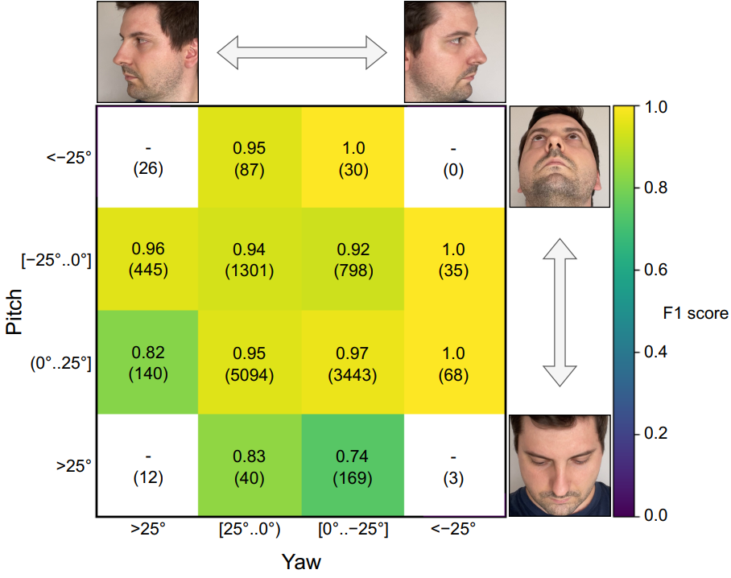

BlinkLinMulT: Transformer-Based Eye Blink Detection
Ádám Fodor, Kristian Fenech, András Lőrincz

Abstract
This work presents BlinkLinMulT, a transformer-based model for eye blink detection.
While most existing approaches rely on frame-wise eye state classification,
recent advancements in transformer-based sequence models have not been explored
in the blink detection literature. Our approach effectively combines low- and
high-level feature sequences with linear complexity cross-modal attention
mechanisms and addresses challenges such as lighting changes and a wide
range of head poses. Our work is the first to leverage the transformer architecture
for blink presence detection and eye state recognition while successfully implementing
an efficient fusion of input features. In our experiments, we utilized several publicly
available benchmark datasets (CEW, ZJU, MRL Eye, RT-BENE, EyeBlink8,
Researcher’s Night, and TalkingFace) to extensively show the state-of-the-art
performance and generalization capability of our trained model. We hope the proposed
method can serve as a new baseline for further research.
Task
- Develop a fast and accurate transformer-based framework for eye blink detection and eye state recognition using video sequences.
- Combine low- and high-level multimodal features including RGB texture, iris and eye landmarks, eye aspect ratio, and head pose angles.
- Handle challenges like lighting changes, extreme head poses, and noisy input data.
Challenges
- Detecting subtle and transient blink events that last only a few frames.
- Dealing with large variations in head pose, gaze angle, and occlusions.
- Ensuring robustness across multiple diverse datasets and real-world scenarios.
- Balancing model accuracy with computational efficiency for real-time applications.
- Fusing heterogeneous features (texture, landmarks, head pose angles) effectively.
Proposed Method
- Introduce BlinkLinMulT, a multimodal transformer architecture with linear attention mechanisms for efficient fusion of input feature sequences.
- Input features include RGB eye patches extracted via CNN backbones, iris and eye landmarks, eye aspect ratio computations, and head pose angles estimated by specialized neural nets.
- Cross-modal transformers translate features between modalities, followed by self-attention layers for enhancing temporal information.
- Final head consists of a fully connected layer producing blink presence and eye state predictions at frame and sequence levels.
- Utilize linear complexity attention to reduce computation time and memory consumption compared to quadratic attention.
Main Results
- BlinkLinMulT achieves state-of-the-art or highly competitive performance on multiple public benchmark datasets including CEW, ZJU, MRL Eye, RT-BENE, EyeBlink8, Researcher’s Night, and TalkingFace.
- Cross-dataset evaluations demonstrate robustness, with models trained on unioned datasets outperforming those trained on single datasets separately.
- Ablation studies highlight the importance of combining RGB texture with eye and iris landmarks and head pose for best performance.
- Accuracy slightly decreases for large yaw and pitch angles, but remains acceptable for extreme head poses.
- Sequence modeling with transformer layers outperforms frame-wise methods, especially in recognizing temporal blink patterns.
- Linear attention significantly reduces inference time and memory usage, enabling practical real-time eye blink detection.
Visualization

Head pose angle dependence of BlinkLinMulT in the case of blink presence detection
task. The head poses are predicted by 3DDFA_V2; the colors represent the F1 score calculated for the
blink presence task, which is also written within the boxes together with the number of samples (in
parenthesis) considered during the metric evaluations. F1 score cannot be calculated for those extreme
cases, where closed-eye samples are not available.
Test samples from all 5 sequence datasets are used for
the experiment. Blinks can be predicted accurately in the case of frontal faces, and while the participant
is looking up. Performance slightly decreases when the monitored person is looking down.

BibTex
If you found our research helpful or influential please consider citing:
@Article{fodor2023blinklinmult,
AUTHOR = {Fodor, Ádám and Fenech, Kristian and Lőrincz, András},
TITLE = {BlinkLinMulT: Transformer-Based Eye Blink Detection},
JOURNAL = {Journal of Imaging},
VOLUME = {9},
YEAR = {2023},
NUMBER = {10},
ARTICLE-NUMBER = {196},
URL = {https://www.mdpi.com/2313-433X/9/10/196},
PubMedID = {37888303},
ISSN = {2313-433X},
DOI = {10.3390/jimaging9100196}
}